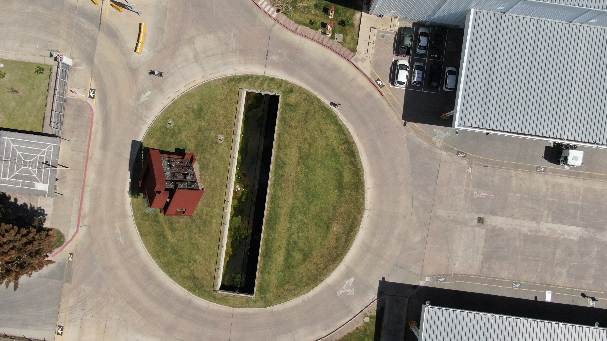
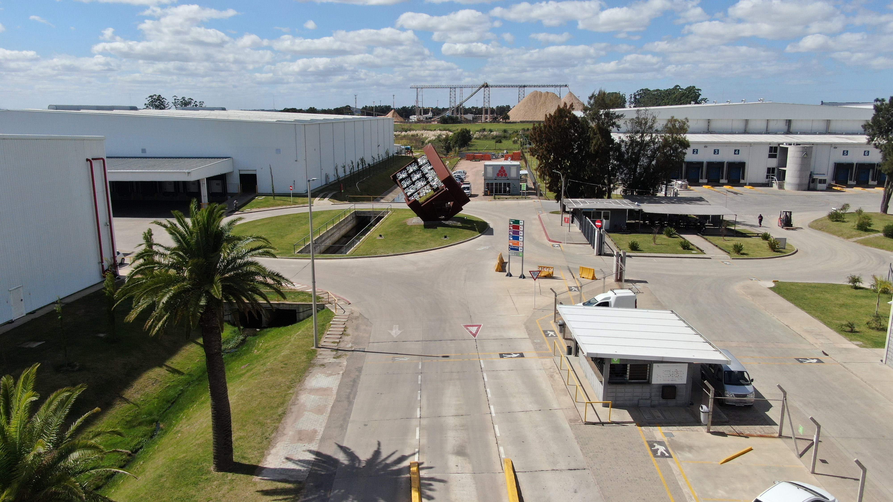
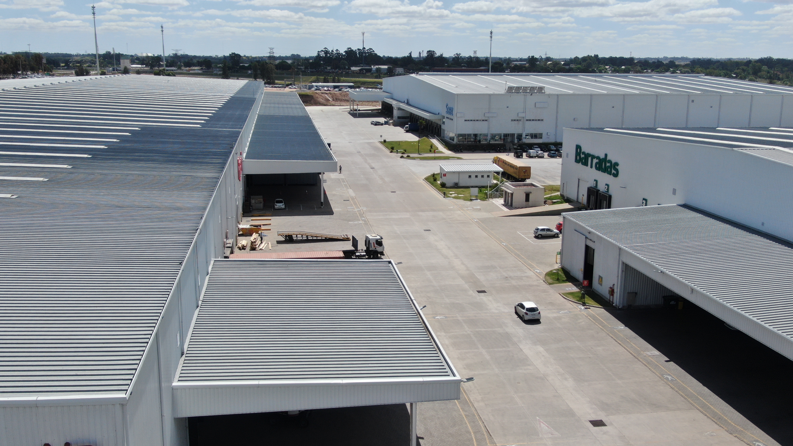

Sobre Polo Oeste
Un lugar único y en pleno crecimiento que cuenta con:
- Ubicación estratégica dentro del país y respecto a la región.
- Economía de escala.
- Flexibilidad edilicia: desde depósitos standard a proyectos a medida.
- Experiencia acumulada en desarrollo de infraestructura y edilicia con equipo de ingeniería dedicado.
- Desarrollador-Usuario, involucramiento real en el funcionamiento diario.
- Master Plan a largo plazo.
- Un país que asegura estabilidad política y económica.


